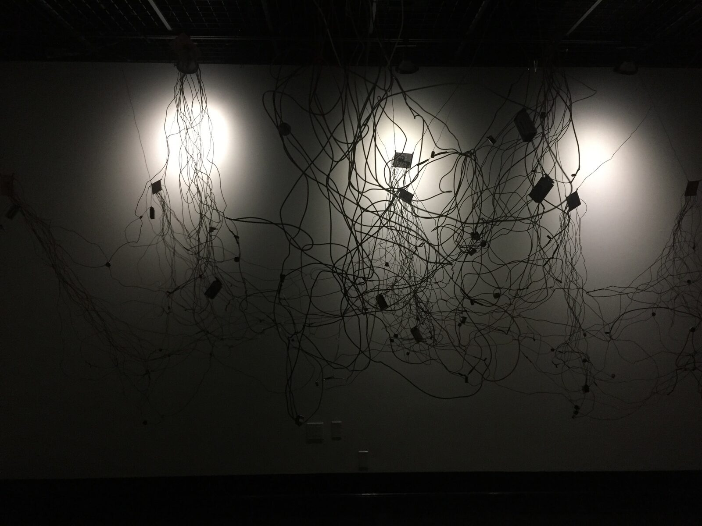
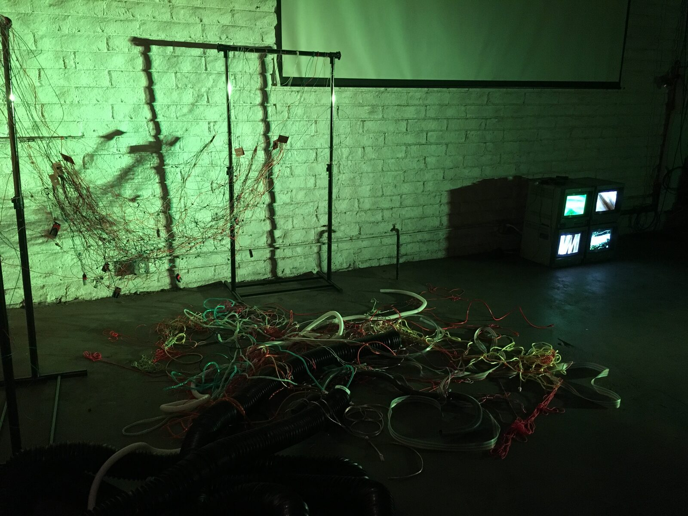
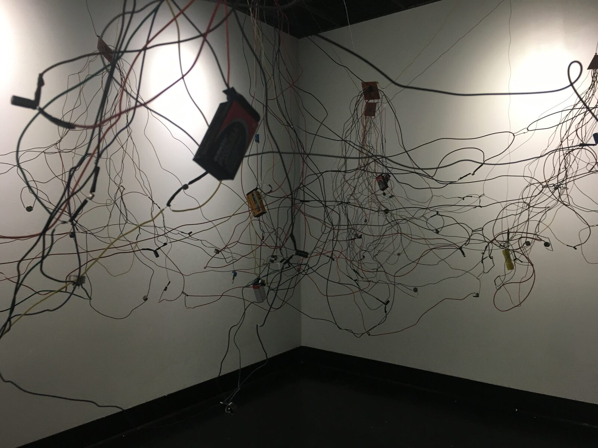
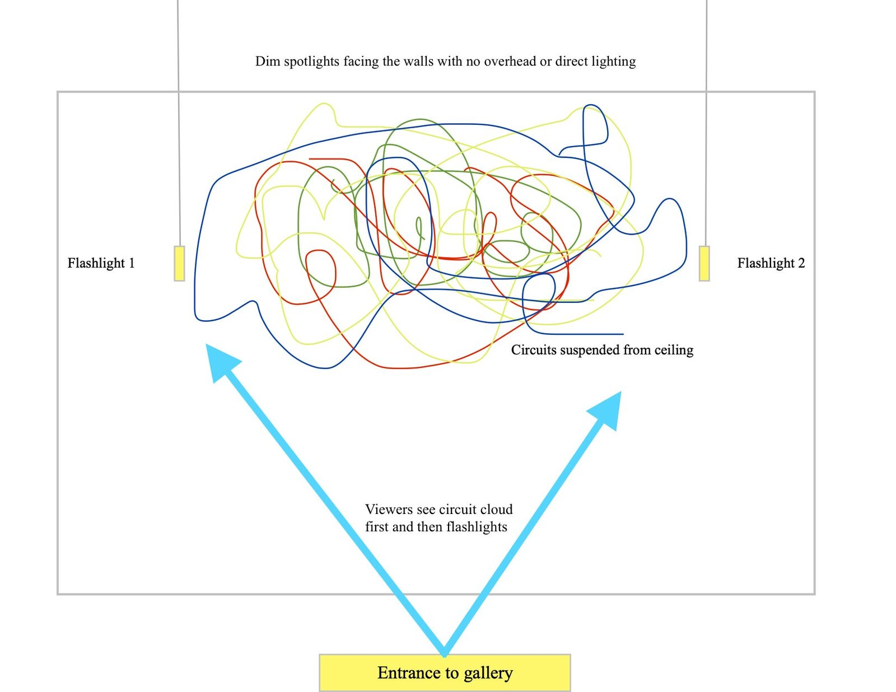
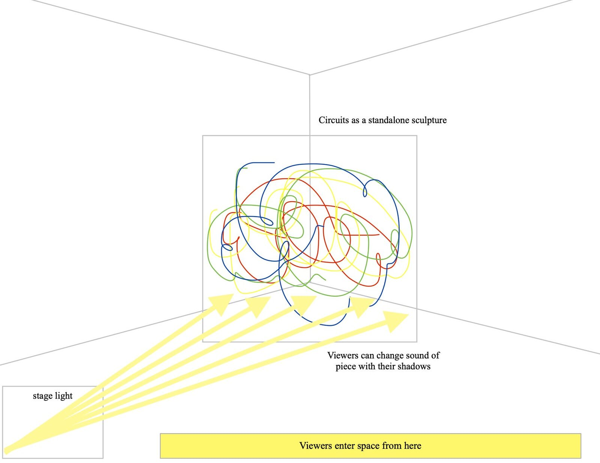
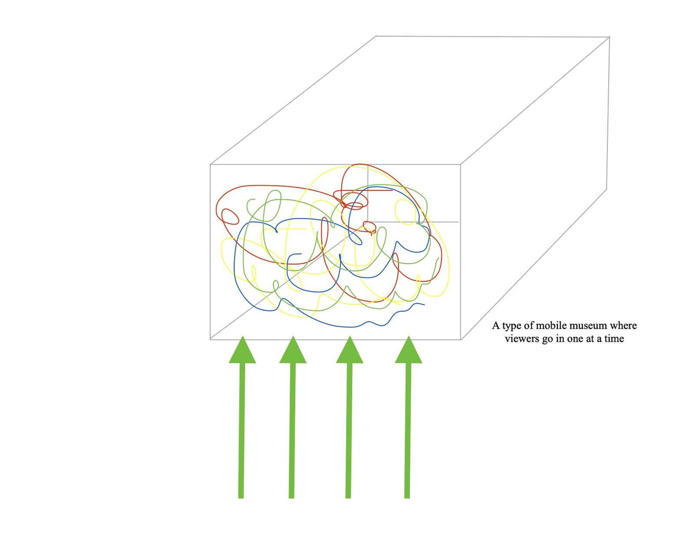
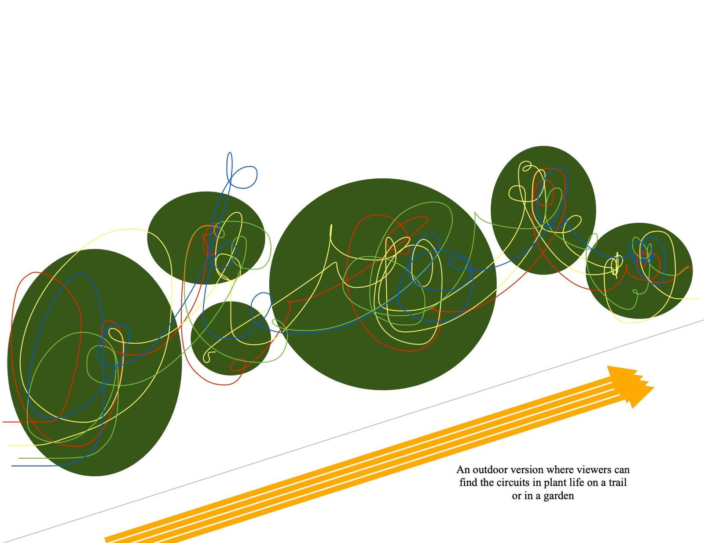

Interface Design
Interface Design
Author(s)
Erin Demastes
Erin Demastes is an experimental composer, performer, and instrument maker whose research combines sound and technology with humor, drama, and absurdity. She uses everyday, household objects and hacked electronics for her installations and performances and subverts their use and perception with play and experimentation. In addition to her interest in physical materials, Erin also experiments with instruction and interaction design by playing with the boundaries of her scores, performances, and installations to find a balance between structure and uncertainty.
Erin received an M.F.A. in Experimental Sound Practices and Integrated Media from California Institute of the Arts, a B.M. in jazz studies and piano performance from Loyola University New Orleans, and is currently pursuing a Ph.D. in experimental music and digital media at Louisiana State University.
Abstract
Interface Design is a flexible, site-specific installation that can be presented in more than one configuration. It plays with the idea of what we expect synthesizers to look like by obscuring the user interface. This installation consists of oscillator circuitry paired with different values of photoresistors hidden throughout a web of wires.
Project Description
Interface Design critiques modern technology design by presenting an instrument that removes the familiarity of the screen and box enclosure to allow viewers to explore the piece rather than guiding them toward a prescribed interaction. The thought process behind the design is for the instrument’s initial function to be immediately apparent but to keep viewers in the space for longer by creating layers of features to discover. The goal is to reach a middle ground between transparency and complexity in order to design an instrument that encourages play and experimentation.


Fig. 1: Interface Design I
The first iteration of this piece was presented in a white-box gallery at California Institute of the Arts as a hanging cloud of wires and flashlights. On entering the space, viewers saw a clicking cloud of wires suspended from the ceiling. As they walked closer and noticed the flashlights, they typically turned on a light and aimed it toward the cloud at which point they noticed the sounds changing.


Fig. 2: Interface Design II
The second iteration of this piece was presented at Coaxial Arts Foundation in Los Angeles which is a brick warehouse gallery space. Here the piece was designed as a standalone sculpture where a stage light was shone on it from across the room. As viewers walked toward the sculpture to view it, they noticed that their shadows changed the sound of the piece.
Interface Design was scheduled to be presented at Sound Pedro 2020 at the Angeles Gate Cultural Center and as part of the 7th season of the Summer Nights in the Garden series at the Los Angeles Natural History Museum in 2020, but both have been put on hold for the time being. The exciting part of this piece is that each presentation can be completely different than the last, making it truly site-specific each time.
This piece also includes a workshop where participants learn the technical aspects of the 40106 chip and its accompanying components and design, breadboard, and assemble their own Interface Design oscillators. Although fabricating a large cloud of wires is not required to successfully complete the class, unconventional interface designs are encouraged.


Fig. 3: Interface Design Wires
Technical Specifications and Feasibility
This installation consists of ten 40106 CMOS oscillator circuits paired with 4 photoresistors on each circuit board, making a total of 40 oscillators. However, each circuit is separate from the others. As a result, they can be configured in any way to fit any space. Even if there is only space for a few of the circuits, the integrity of the piece remains intact. Each oscillator has its own small speaker that is hidden in the cloud of wires, making the piece self-contained.


Fig. 4: Diagram of Interface Design I


Fig. 5: Diagram of Interface Design II
The 40106 circuit requires some type of variable resistor and capacitor combination to make the pitch of each oscillator, so the photoresistors and capacitors were paired in a way that each oscillator has a different pitch. This ended up being an exciting aspect of the installation as viewers would try to locate their oscillator’s speaker and figure out what pitches they could make out of each photoresistor. It was also interesting to notice that viewers, after figuring out what the flashlights were for, would use their cellphone lights to get under or inside of the circuit cloud to play with the piece.
The installation requirements of Interface Design are flexible in terms of the size of the space, as the wires can be stretched or compressed to fit most situations, but it’s preferable to have a dark and quiet space to install so the changes in pitch can be heard clearly. The piece requires ten 9-volt batteries to run each circuit, so it can be installed outside if the area is dry without worrying about wall sockets or extension cords.


Fig. 6: Diagram of Future Interface Design III


Fig. 7: Diagram of Future Interface Design IV
Media and Documentation
Link to above video can be found here.
Interface Shadows is a piece by Eric Heep that accompanied Interface Design II at Coaxial Arts Foundation in Los Angeles.
For more photos and information, please visit erindemastes.com/interface-design or erindemastes.com/interface-design-ii.